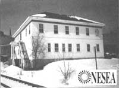
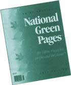

An office designed for the 21st century produces more power than it uses!
A Massachusetts project promises to be just the thing that environmentally conscious people long to see: a building that creates more energy than it uses.
The project is called the Northeast Sustainability Center (NSC) and is designed to be a "living laboratory" and education center that focuses on demonstrating the state of the art in renewable energy production, efficient energy use, and environmental design. In addition to being a net producer of energy, the Center will also serve as home for the Northeast Sustainable Energy Association (NESEA), a regional energy association.
All waste materials - including organic wastes - will be reused, recycled, or, in some cases, composted and put back into the environmental cycle. Some waste material will be converted into fertilizer that can be used to grow plants that help purify the air inside and outside the building. The Center will also accommodate nonpolluting transportation by including a garage designed for electric vehicles. And finally, gray water (e.g., waste water from the kitchen) will be recycled to be used in greenhouse planters, further reducing fresh water waste.
Air and water leaving the building will be even cleaner than the air and water that enters the building. Air samples are likely to be analyzed before and after their contact with the building for ground level ozone, air pollutants, and other measures to determine air quality. In addition, spokesperson Jack Groh said ambient air entering the building will be met by a concentration of green plants as another method of purification. The overall goal for the building is to improve the quality of the surrounding environment.
Several study groups will be used to explore a variety of possible power sources, but a hybrid, solar/propane system seems the most likely contender. If the sources used create a net gain of energy, it is likely that the excess power will be sold back or donated to the local utility.
A number of environmental issues are being addressed in the construction of the Center as well. For example, materials are being selected for recycled content, local origin, and low toxicity, as well as for their performance.
"This is the type of building construction and design that will lead the way into the next century," said Nadav Malin, chair of the project team that is overseeing the process of creating the Center. "Creating living and working space that meets our current needs without compromising the needs of future generations is a necessity," said Malin.
Signs of recycling will begin even before the completion of the facility, which is projected for 1995. Extractable wood and masonry materials from waste products will be used to create a public park and to build benches or a water fountain, according to NESEA's executive director Michael Grabschied. "The goal is not to throw it away and have it clog another landfill," he added.
- Jim Sackel
Since 1983, Co-Op America has been publishing the National Green Pages, a handy guide to environmental organizations. Similar to the traditional yellow pages, this guide boasts a listing of 1,400 companies across the United States and features everything from organic cotton clothing to beauty products to nontoxic safe paint.
Getting listed in the Green Pages is no easy feat; companies have to successfully pass the four-part screening test. Co-Op America, a national nonprofit organization, will accept a company's membership in the guide based on the following standards: how they treat their workers, customers, community, and environment.
Not only do companies need to succeed in the above areas, they must excel beyond contemporary standards. Co-Op America is interested in companies that are truly dedicated to establishing a new standard and not just paying lip service to the passing trends. For example, take the Harlem Textile Works, a cloth shower curtain company based in New York City. Every year they hold their Children's Arts Carnival where they do art projects with inner-city kids. Not only are the kids able to practice their arts and crafts, but sometimes their designs even end up on the shower curtains. Talk about making your mark!
The guide comes out every October and costs $5.95. To order or to list your business, call 1-800-58-GREEN or write Co-Op America, 1612 K Street NW, Suite 600, Washington, DC 20006.
- Christine Cauchon
|
 A railroad administration building, built in 1910, that is being transfonned into the fuel-efficient headquarters of NESEA in Greenfield, Massachusetts. |
 |
|